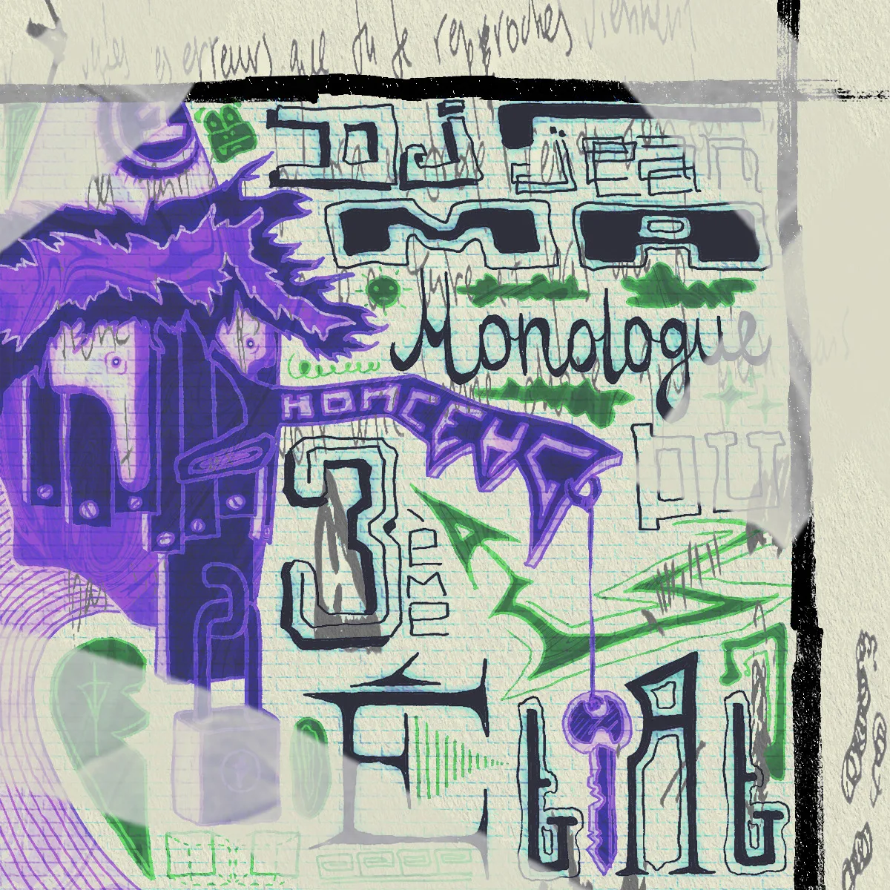
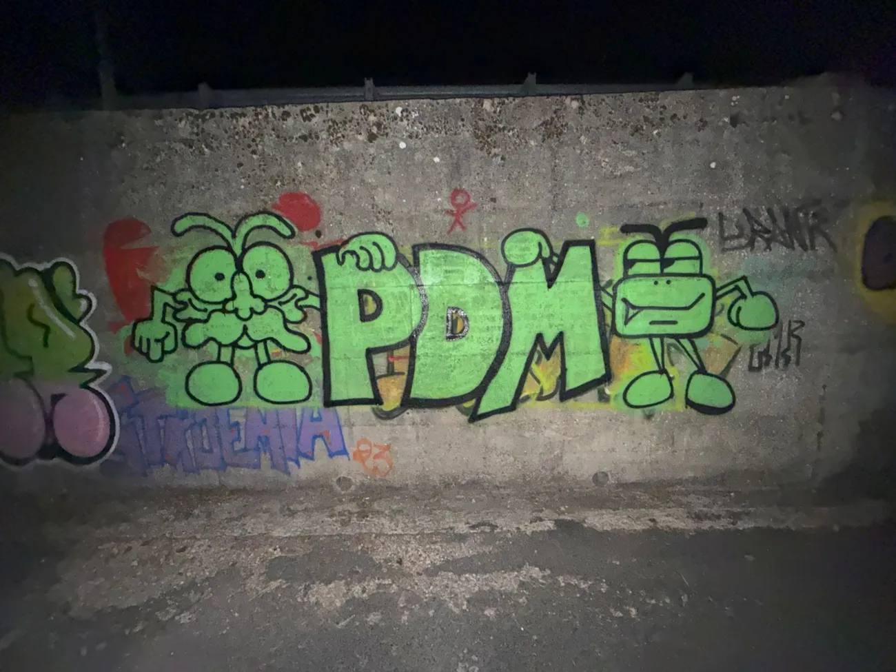
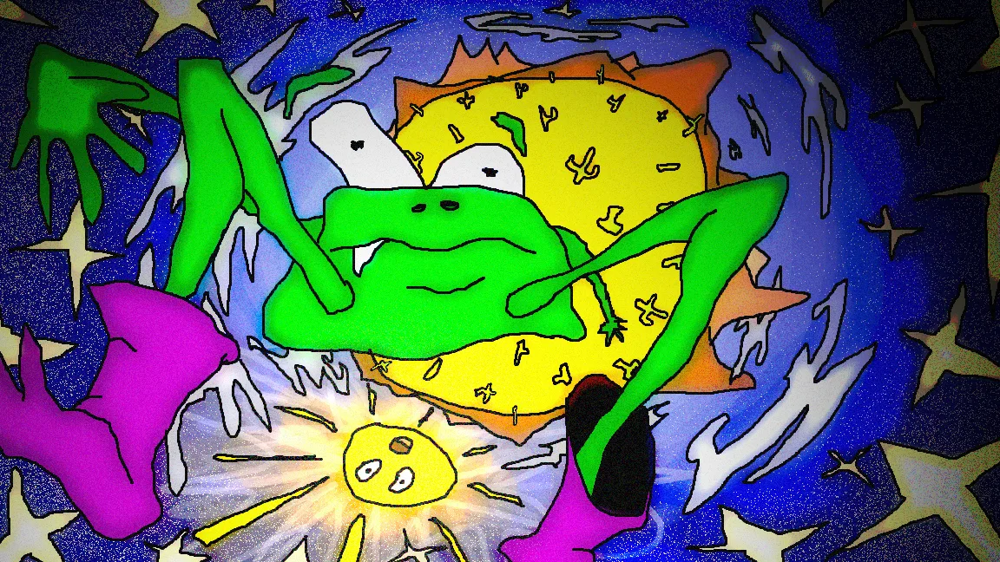
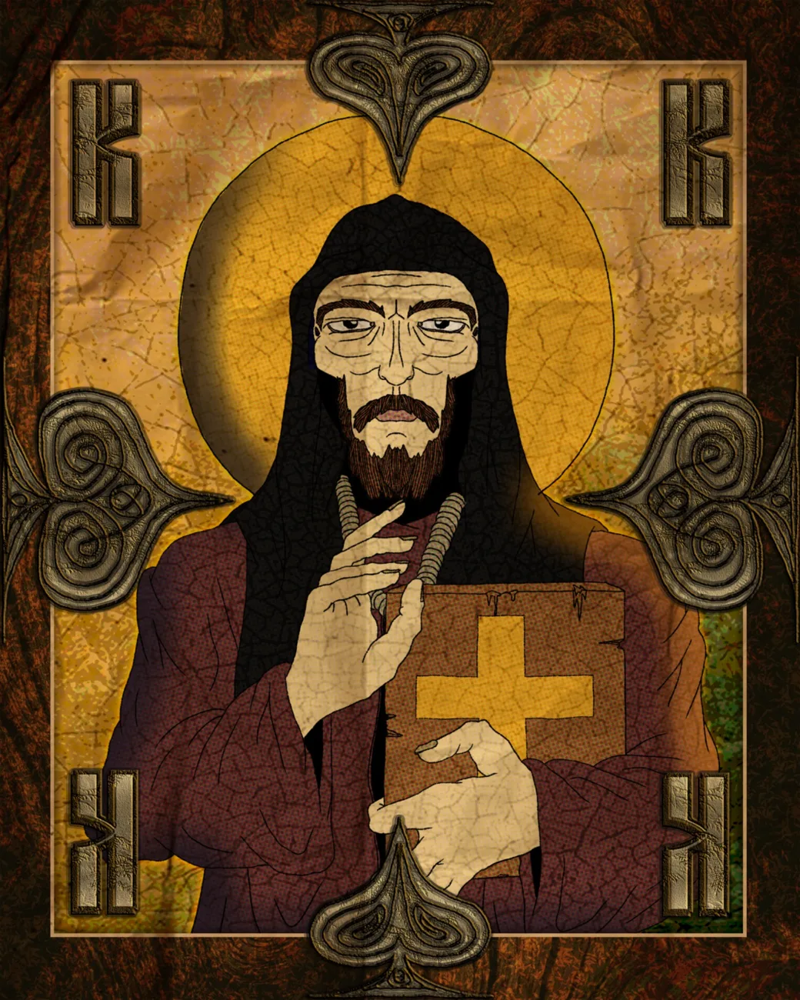
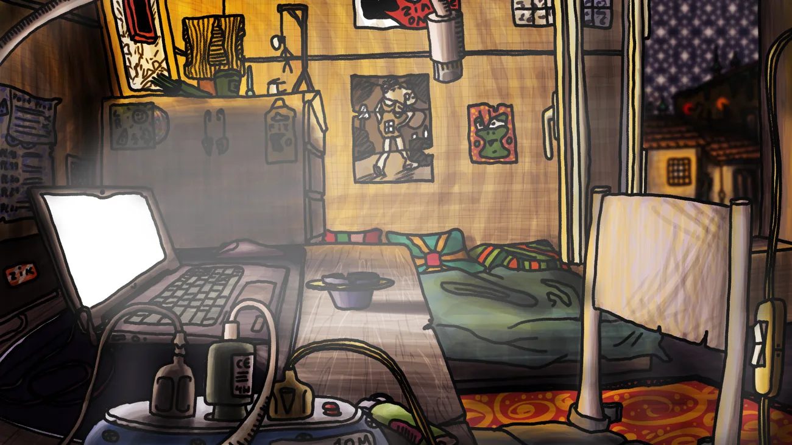
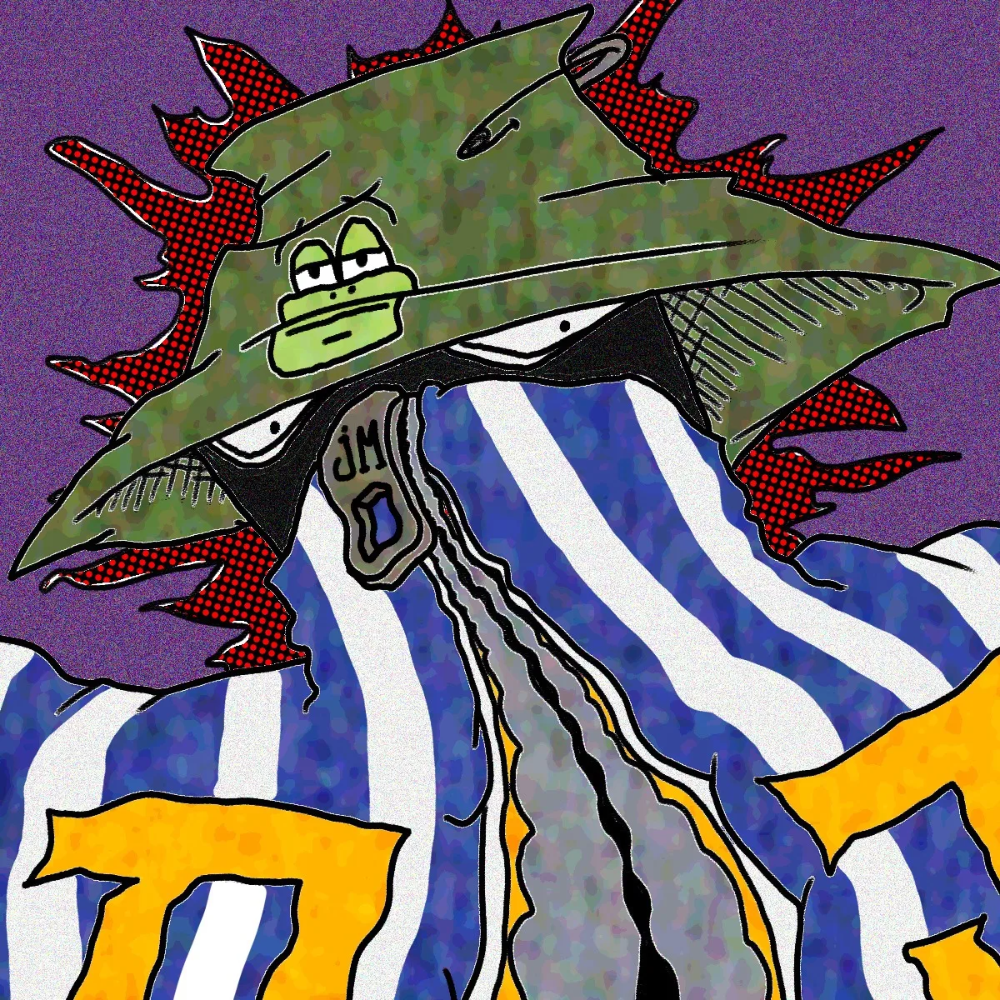

JEAN
MARTIN
OSSEUX
ARCHIVES INSTABLES // NE PAS RANGER
01 / GrebikovitchBD, illustrations, créatures

02 / DJ JeanMaMusique, productions, sons
03 / Prisonniers du MicroHip-hop, collaboration
04 / On se déréalisePhotographies et expériences
05 / CinémaFilms, animation, essais
06 / IllustrationsDessins, images et objetsUn laboratoire artistique indépendant entre réel et fiction. Bienvenue dans le désordre.
Images, sons, films, personnages et expériences.

↑ Ouvre les dossiers, explore les fenêtres et cherche les secrets.